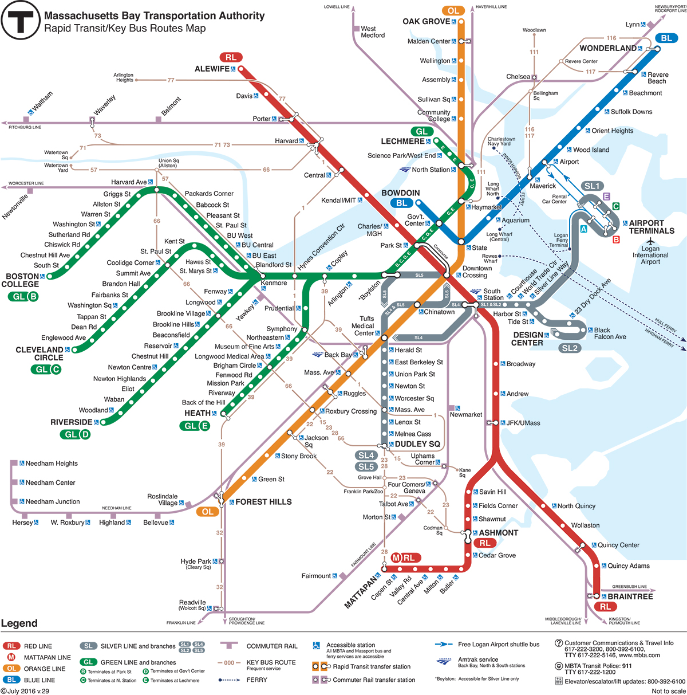

1. 地铁
1.1 地铁概况
波士顿的地铁称为T，分红橙蓝绿四条线，这四条线的主线成“井”字形在市中心（downtown）附近两两相交。开往市中心（Park St. Station）的为进城方向（inbound）；反之，则称为（outbound）。正因为T采用这种确定走向的方法，乘客们要想到达正确的目的地，光知道车驶进城或出城还不够，还需要知道T驶向哪个具体终点站。红线和绿线都有支线，大家要格外注意是否在正确的line上。除了单程的票价外，还有月票，价格是每月$75元。学校会发邮件提醒学生提前买学生季票（9月到12月，2月到5月），可享受11%的优惠。
除了单程的票价外，还有月票，价格是每月$75元。学校会发邮件提醒学生提前买学生季票（9月到12月，2月到5月），可享受11%的优惠。
1.2 票价
刷Charlie Card单次$2.25，可以免费换乘bus、Express Bus有相应折扣、两小时之内免费换乘一站。
价格明细详见MBTA官方网站：
详细介绍从2016年7月1日起，波士顿MBTA实施了涨价方案：T从$2.1涨至$2.25、bus从$1.6涨至$1.7、月票也随之从$75增长至$84.5。虽然价格上涨，但是波士顿公交票价在美国大城市中还是比较低的。
1.3 绿线
绿线以Kenmore站为中心，向东为主线，向西发展分为B/C/D/E四条支线。由Lenchmere和North Station为起始站，B/C/D/E线到Copley一站开始分支，E线变为地上铁轨；B/C/D则是从Kenmore站分道扬镳。
B线是BU学生常用的路线，由Kenmore站出发后就进入了BU主校区，五个站台由东至西，贯穿整个BU校园，分别为Blandford St.、BU East、BU Central、BU West、Babcock St.
BU学生off-campus的主要居住的区域在学校西边从Babcock St.开始到Washington St.一带，选择在C、D、E线上住所居住的同学不多。
1.4 校区周边站点
Kenmore职业中心、Myles Standish宿舍楼、Barns & Noble书店、主管on-campus的办公室、邮局、公交车57路总站、波士顿红袜队（Red Sox）的主场Fenway公园棒球场。
Blandford StHOJO宿舍楼(联邦大道575号)、Questrom商学院（QST）、教育学院（SED）、理科楼、Morse报告厅、Towers宿舍楼和工学院（ENG）。
BU EastWarren宿舍楼、传媒学院（COM）、大都会学院和文理学院（CAS）。
BU Central法学院、Marsh广场、Mugar图书馆、光电中心和George Sherman Union（GSU）。
BU West艺术学院（CFA）、通识教育学院（CGS）、学生健康中心（SHS）、国际学生学者办公室（ISSO，简称881）和酒店管理学院（SHA）。
Babcock St健身娱乐中心、Agganis体育场、Shaw's超市、校车站和星星超市。
Packard's Corner88中国超市。
Harvard Ave韩国城、各国餐馆和小型商店和66路车站（可达哈佛）。
波士顿著名的交响乐乐厅（Symphony Hall）和艺术博物馆（Museum of Fine Arts）都在E线上。BU学生可免费参观艺术馆的主馆，从BU步行过去不远。
1.5 其他主要站点
绿线贯穿了整个波士顿的商业区与著名的旅游景点，与波士顿人民的生活与工作息息相关。
North StationMBTA的城际火车开往北部各线的起始站。从这里可以乘火车去女巫镇等富有历史传奇色彩的小城。此外，波士顿凯尔特人队主场Fleet中心就在这一站的旁边。
Haymarket波士顿著名的农贸市场，每周五下午和周六全天这附近都会聚集很多商贩，出售廉价的水果蔬菜和海鲜。价格便宜，约为一般美国超市价格的四分之一。缺点是人多拥挤，比较脏乱，而且瓜果蔬菜的储藏时间很短，容易变质。
Park Street不仅是非常重要的中转站，也是很多名胜聚集之处。一出站便能看见波士顿最古老的公园——波士顿公共花园，紧接着不远处就是市中心交叉口和金融区。Macy's等百货商店也都坐落于此。
Boylston中国城（Chinatown）、戏剧区（Theatre District）和波城另一个公园——波士顿公园交界的地方。这里有一个IMAX电影院（LOWESAMC），喜欢看电影的同学一定会常来。
Copley波城大型购物区的中心，附近有Copley广场、保诚中心、Newbury St等汇集世界名品的购物中心，以及波士顿公立图书馆。
Hynes Convention Center另外，修建了两年的政府中心站终于于2016年3月21日重开，翻新的地铁站采用了全玻璃墙的现代派设计。这里有著名的法尼尔大厅（Faneuil Hall）和昆西市场（Quincy Market）。
1.6 中转站和转车
转乘均为免费。
绿线与红线交汇于Park St站，由此可乘红线去往麻省理工和哈佛。这一站还有通往红线与橙线交汇站市中心交叉口的地下通道。绿线与蓝线交汇于政府中心站，由此可乘蓝线前往仅四站之遥的机场。
需要注意的是，由于绿线Boylston和Copley这两站进城和出城的站台是彻底分离的，因此无法免费转乘相反方向的车。因此，若想要改变进出城的方向，可以到两站之间的Arlington转车。
2. 公交车及校车
波士顿是一个公共交通非常完善的城市，由地铁、巴士和火车组成的MBTA交通系统几乎布遍了整个波士顿的生活空间。贯穿波士顿大学的巴士线路是巴士57路，在Water town和Kenmore之间往返运行，横穿Boston、Brighton和Water Town。
- 57路：
- 66路：
- CT1
乘坐巴士只需要出示通票或者零钱，下车之前揿一下车壁上的黄色提示线，叫停的提示灯就会亮，司机一定在下一站停。更多巴士信息，例如首班末班车的时间以及停靠站名等信息，可以参考 MBTA官网。
终点站哈佛广场，紧邻哈佛大学，途经与主校区分离的哈佛商学院和体育场。路线很长，一部分都在哈佛大道/哈佛街上。在哈佛大道与联邦大道的交叉的路口上有一站。BU的同学可由此乘车去哈佛游玩或购物。这样可与免去由绿线进城再倒乘红线的麻烦。
医学院的同学可能常会乘坐这趟汽车。由医学院出发，沿着麻省大道横穿麻省理工，开往中央广场。其中它会经过交响乐堂。Hynes/ICA这一站非常重要，住在BU主校区附近的医学院学生可乘地铁绿线B线到此站，再倒乘CT1。
补充：在春秋两季的学期中，波士顿大学为住在校外的学生提供免费的往返巴士，也就是校车。和MBTA巴士不同，查尔斯河校区的校车每15分钟从Agganis路与联邦大 道的路口处开往Alany街710号的医学院校区，并往返。
详细介绍3. 出租车
打车流程和国内基本差不多，可以找到不同出租车公司并且打电话叫车。iPhone有一个叫Taxi Magic的软件可以叫车。需要注意的是，出租车的小费现金消费一般为10%，如果刷卡的话，因为司机需要多交6%的税，所以小费最低20%。
Uber/Lyft：相当于国内的滴滴打车（需要网络），这些软件叫来的出租都是私家轿车，服务好且价格优惠，还能叫到大的SUV来搬运行李。
4. 自行车
波士顿是个比较适合骑车的城市，城区大部分地区有租赁自行车HUBWAY的站点，一天租金6美金，骑行超过半小时后每半小时要多收一些钱。如果经常租的可以上网站注册他们一年85美金的会员。这边卖新的自行车可能在200美元以上，不建议同学购买太好的自行车，有的同学花500多快买的新车刚买就被偷了，而且锁在外面一下雪就挖不出来。所以可以考虑上亚马逊买大概200左右的新车，或者找学长购买二手自行车。
注意：HUBWAY每年只有三个季度有，冬季不提供租车服务。
价格明细及其他相关信息详见 HUBWAY官网。
5. 长途旅行
长途大巴
中国城的旅行社：部分旅行社有前往一些热门地点的廉价巴士服务（如纽约、康州或者尼亚加拉大瀑布）。
Greyhound：很大的巴士公司，在美国和加拿大具有超过3700个站点的服务，并且收费比较廉价，还有无线网络。详情请见 Greyhound官网。
还有Peter Pan Bus Lines，Vermont Transit Lines，Plymouth & Brockton Buses，Concord Trail ways，Concord Coach Line等巴士服务。
铁路
Commuter Rail：由MBTA经营的公共铁路系统，能够到达一些离波士顿两小时车程内的地点（如Worcester，MA、Providence，RI），费用相对便宜。详情见 Commuter Rail官网。
Amtrak：美国国家铁路客运公司，简称美铁。火车贯穿全美，其中波士顿有三站：后湾（BBY）、北站（BON）、南站（BOS），提供Acela特快高速火车、东北部短途火车和纽约州奥尔巴尼(Albany)的日常Amtrak火车，并延伸至芝加哥。
6. 租车
来到汽车大国，如果不开车总觉得不太方便。还好有波士顿的租车系统，十分健全且方便快捷。
首先，租车人最好持有麻省本州的驾照，申请方法具体见“ 生活篇 ”。当然，如果有国内驾照的话，有些租车公司也提供服务。
大部分租车公司要求25岁，最低年龄21岁（需另附费用且有车型限制），Hertz可以放宽到18岁但价格比较高且限制条件较多，具体政策细节请查看各租赁公司网站。
租车攻略：
短程+短时间使用Zipcar；长距离road trip使用Enterprise。当然还有Dollars，Thrifty，Advantage，Budget这几家都是有信誉的大品牌。Hertz，Avis相对要贵一些，不过车型选择多一些，甚至可以租奔驰E系等。
Zipcar
适合短时间，短途租车，因为每天有180英里的限制。BU有会员费折扣，加入以后大部分车每小时租金在10美元左右，好一些的车比如奔驰或者宝马每小时在15美元左右。租金包括油钱和保险，如果只需要用一两个小时，比如买个家具买个菜，去朋友家玩等等还是比较划算的。
Enterprise
经过比较，该公司的车相对较新，服务比较周到，工作人员经常有免费升级的让利。与其他租车点相比起来，Enterprise机场租车点的营业时间很长，车型很全，经常能有低价。不过取车还车需要去机场，可能会比较麻烦。如果不确定是否能跑完一箱油（大约20加仑）就不需要提前买整箱油。租车的保险其实是额外保险，如果你有Visa信用卡，使用你的信用卡租车是可以获得保险的，所以如果觉得问题不大可以免去这笔费用，一般每天要17到25美金。
无法multitask边开车边看手机导航的同学，建议网购一个GPS，这样就不用每天交10刀租用他们的GPS了。25岁以下的未成年监管费有很多方法可以免去，最简单的是加入Hertz的会员就可以不用交这笔费用。另外简单可行的方法有USAA，CHABAD等，稍微有些投机取巧打擦边球，在这里就不详细说明了。